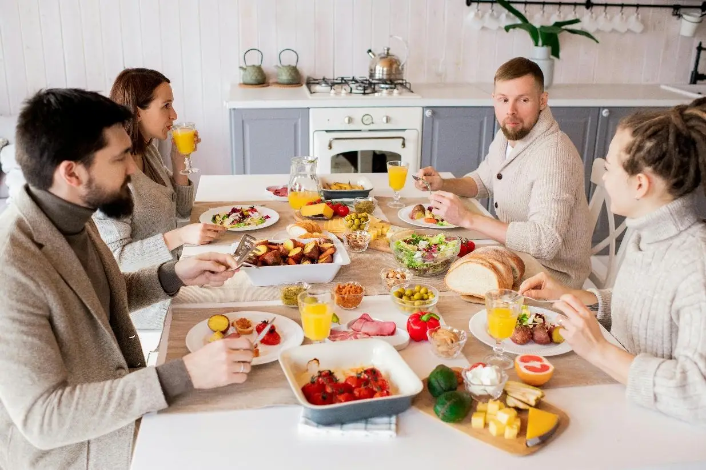

Loss of Appetite
⚠️ Seek Immediate Medical Help for Anorexia (Loss of Appetite) If:
- No food or fluid intake for more than 24–48 hours
- Rapid weight loss or extreme weakness
- Signs of dehydration: dry mouth, dizziness, low urine output
- Persistent nausea or vomiting
- Severe fatigue that prevents daily activities
- Confusion or drowsiness
- Fever or pain with loss of appetite (may indicate infection or organ issues)
üõë Loss of appetite can lead to serious complications in leukemia. Get help if symptoms worsen or persist.
Small Frequent Meals
Focus on small frequent meals and high calorie and protein rich food such as nuts, cheese, eggs, and chicken.
Variety in Food
Adapt variety in food like preparing smoothies, shakes, soups to create interest in eating, enhance taste appeal, and improve overall nutritional intake.
Practice Oral Hygiene
Maintain regular brushing and use mouthwash. Seek treatment for mouth sores if present.

Engage in Physical Activities
-
WALKING –
VIDEO 4: Engage in brisk
walking (5–10 min) based on your endurance. Plan your day to avoid
inactivity.
-
GARDENING –
VIDEO 3: Engage in gardening
activities.
-
CLIMBING STAIRS –
VIDEO 5: Climb 5–10 stairs
daily according to your tolerance. Rest if tired. Do not overexert
as it may cause harm.
Meal Companionship
Eat with family members or friends and ensure a pleasant mealtime environment.
Benefits:
- Reduces feelings of isolation and low mood
- Encourages a sense of belongingness
- Positive social interaction can enhance motivation to follow medical and nutritional advice
Note: If the anorexia is severe, seek immediate medical attention.